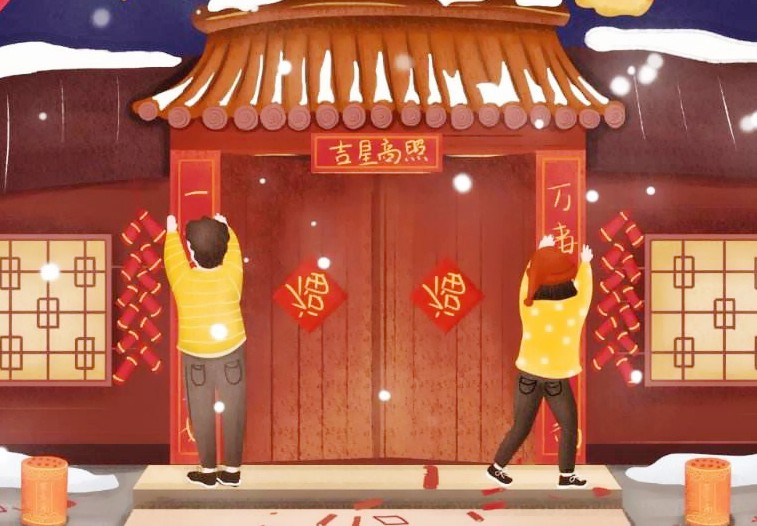

Project
About IT
There are many interesting tales and legends about the traditions of the Spring Festival, among which the following two are the most popular.
- The mythical Nian beast:
In ancient times, there was a savage beast called Nian (in Chinese “nian” has the meaning of “year”). Every year on the 30th day of the 12th lunar month it would come out and attack livestock and villagers. Then one year as Nian was approaching a village, it came across two shepherd boys who were competing their ability of using whips. Upon hearing the loud crack sound, the beast was so frightened that it fled at top speed to another village, only to bump into red clothes hanging outside a house. Terrified again Nian continued to run on past the village. It soon arrived at another village. But when it saw a house illuminated with light inside, it run away once again. As a result, people concluded that the beast was afraid of loud noise, the color red and glaring lights. Every year afterwards, when the New Year was about to come, people would set off firecrackers, beat drums and gongs, hang red lanterns, put up red paper on the windows and doors, and wear red clothes, all of which later evolved into traditions of Spring Festival.
- calendar:
According to legends, there once lived a young man named Wan Nian in ancient times. He decided to create a unified calendar after witnessing the chaos caused by the lack of it. By accident, he was inspired and designed a device similar to the sundial to tell the time based on the change of shadows when the sun is shining, and another device resembling clepsydra for measuring time.
As time went by, he discovered that a new cycle of four seasons restarted every 360 days or so. Upon discovering this annual pattern of seasons, he went to see the monarch of that time, and explained the movement of the lunar and solar systems. The monarch listened intently and was convinced that what he heard was correct, and gave Wan Nian a position in the royal court in hope that he could figure out the exact lunisolar laws and create a unified calendar. One day, Wan Nian said to the monarch, “Each cycle is completed at the end of 12 months, at which time a new cycle begins. I entreat Your Majesty to name that day as a festival.” The monarch then set it as the Spring Festival.
About Product

- Paste couplets(Chinese:贴春联): it’s a kind of literature. Chinese people like to write some dual and concise words on red paper to express their new year’s wishes. On the arrival of New Year, every family will paste couplets.
- Family reunion dinner(Chinese: 团圆饭): people traveling or residing in a place far away from home will back to their home to get together with their families.
- Stay up late on New Year’s Eve(Chinese: 守岁): it’s a kind of way for Chinese people to welcome New Year’s arrival. Staying up late on New Year’s Eve is endowed with auspicious meaning by people. The old do it for cherishing their past time, the young do it for their parents’ longevity.
- Hand out red packets(Chinese: 发红包): elders will put some money into red packets, and then hand out to the younger generation during spring festival. In recent years, electric red packets are popular among younger generation .
About 运营
- Paste couplets(Chinese:贴春联): it’s a kind of literature. Chinese people like to write some dual and concise words on red paper to express their new year’s wishes. On the arrival of New Year, every family will paste couplets.
- Family reunion dinner(Chinese: 团圆饭): people traveling or residing in a place far away from home will back to their home to get together with their families.
- Stay up late on New Year’s Eve(Chinese: 守岁): it’s a kind of way for Chinese people to welcome New Year’s arrival. Staying up late on New Year’s Eve is endowed with auspicious meaning by people. The old do it for cherishing their past time, the young do it for their parents’ longevity.
- Hand out red packets(Chinese: 发红包): elders will put some money into red packets, and then hand out to the younger generation during spring festival. In recent years, electric red packets are popular among younger generation .
{kind=link}